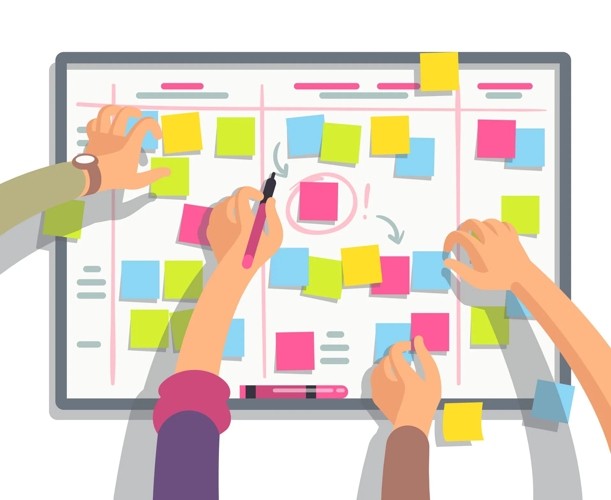

.jpg)
Сонгосон шалтгаан:
Шинэ төхөөрөмж ашиглан илүү их мэдлэгтэй болох гэж сонгосон. Жишээ нь: bluetooth app, motor, arduino гэх мэт чилен. Мөн хүүхдүүдэд уул уурхайн талаар мэдлэг өгөх. Хүмүүсд бүх энгийн төхөөрөмжийг нийлүүлэн том нэг төхөөрөмжийг бүтээн ажилуулж таниулах зорилготой. Бас бусдад санаа өгөх, дэмжлэг үзүүлэх гэсэн давхар зорилготой юм.

Хэрэгжүүлэх төлөвлөгөө:
Манай багийн 4 гишүүн 1, 1 машинаар хувааж авч хийж байгаа. Excavator, Bulldozer, Dump truck, Forklift гэсэн машинуудыг хийж байгаа. Эдгээр машинуудыг app inventor-ooр удирдаж хөдөлгөх, 3D print болон laser cut ашиглаж уул уурхайн машинуудыг бүтээх юм.
DC мотор болон servo мотор-г ашиглан машиныг хөдөлгөхөд суралцана.

Хэрхэн ашиглах:
Барилгийн машинаар газар ухаж газар доорх зүйлийг уул уурхайн зарчмаар ухаж гаргана.
Үүнийг ашиглан сэрвогоор хэрхэн хөдөлгөх, 3D print болон laser cut хэрхэн ашиглахыг суралцана. Мөн app inventor хэрэглэж сурах юм. Энэ төсөл нь уул уурхайн салбараас илүү бидний хичээлд холбогдож байгаа юм. Бид энэ төслийг хийнгээ хажуугаар нь үүнийхээ талаар сурч, мэдэж байгаа юм. Бас энэ төслийг бидний доод үеийнхэн ч ашиглахыг үгүйсгэхгүй. Үүнээс суралцаж ч болно тиймээс бид өөрсдөдөө ч хэрэгтэй бусдад ч ээлтэй төслийг хийж байгаа юм.